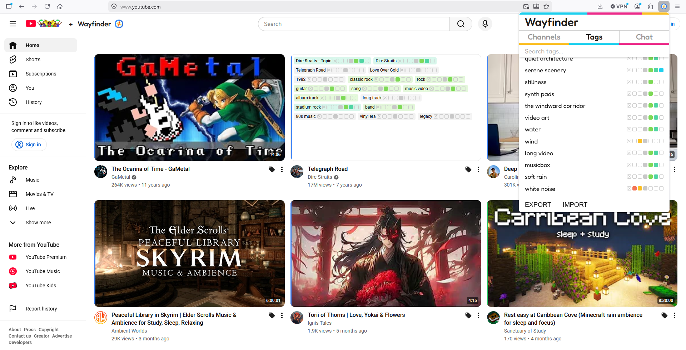

Wayfinder

The algorithm should be yours
Wayfinder is an independent on-device recommender algorithm for YouTube. It gives the user, not YouTube, total control over how the algorithm functions, and lets you see how recommendations are being made.